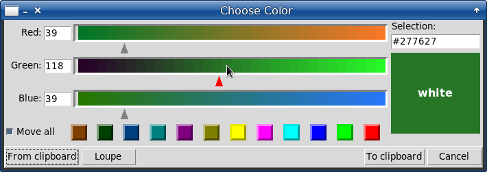
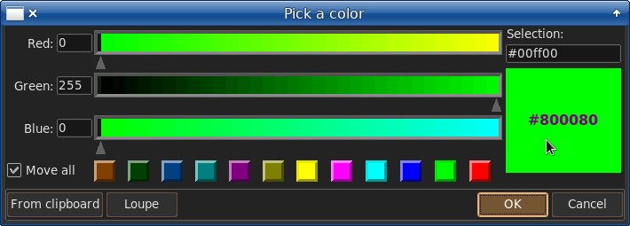

The native Tcl/Tk color picker (tk_chooseColor) is used in Unix platforms as they have no default color picker, while Windows and Mac OS have.
Probably tk_chooseColor looks like an ugly duckling among its tough 'Big Brothers'. Though, the Windows' color picker is somewhat cumbersome, except for its toning bar which is very good feature. Of course the coolest of all is Mac OS' color picker implementing the color circle.
Nevertheless, I would try and show some remarkable features of tk_chooseColor which are enhanced with my little changes, available here:
tkcc.zip
The changes are seen on the screenshots:


The changes to tk_chooseColor are the following:
-moveall (0 by defauls) optional argument is added for tk_chooseColor.
-geometry option is added for tk_chooseColor, in two forms: +X+Y (coordinates) or pointer+x+y (shift from the mouse pointer).
tclsh tkclr.tcl ?-moveall 1? ?-initialcolor color?
Let's consider the following example:
package require Tk
source ~/PG/github/tkcc/clrpick.tcl
button .b -command ::choosecolor -text "Choose Color"
pack .b -padx 40 -pady 20
set ::Bg red
set ::moveall 1
proc ::choosecolor {} {
if {[catch {
tk_chooseColor -initialcolor $::Bg -title "Choose color" -moveall $::moveall
::tk::dialog::color::GetOptions tmpBg ::moveall tmpFg
if {$tmpBg ne {}} {
set ::Bg $tmpBg
.b config -fg $tmpFg -bg $::Bg
}
}]} then {
set tmpBg [tk_chooseColor -initialcolor $::Bg]
if {$tmpBg ne {}} {
set ::Bg $tmpBg
.b config -bg $::Bg
}
}
}
Here, the command: source ~/PG/github/tkcc/clrpick.tcl loads the updated color picker. This command must be run in some initializing code, only once. The path can differ, say, it can be a subdirectory of your application. In Linux, the Tk's color chooser will be replaced with clrpick.tcl. In Windows, the Windows' color chooser will be run instead, even if you source the clrpick.tcl.
Note: try to comment the sourcing command out, just to see how the Tk's standard color picker will be called by the ::choosecolor procedure.
The color picker is run from the Choose Color button. After choosing a color, the button is painted so that its background color is the chosen color and its foreground color is the inverse color.
The inverse color is displayed inside the chooser's color box as white or black. Still, the inverse color can be changed with clicking the box: there is a set of some colors, just to choose one fit for the current background.
The Move all checkbox allows to switch the mode of moving the color triangular selectors - only a current one or all of them. In Tk's standard color chooser, only a current selector is moved, while in this example all of the selectors can be moved if Move all is checked.
The color selectors can be moved with dragging them and with clicking/dragging the mouse pointer inside their color bars.
Note the use of ::tk::dialog::color::GetOptions: it returns the result of tk_chooseColor. This procedure can get up to three arguments (the first is obligatory):
::tk::dialog::color::GetOptions is usually called with two arguments, this way:
tk_chooseColor -initialcolor $::Bg -title "Choose color" -moveall $::moveall
::tk::dialog::color::GetOptions tmpBg ::moveall
if {$tmpBg ne {}} {
set ::Bg $tmpBg ;# the color was chosen
...
}
In our example, the tmpFg argument is passed to ::tk::dialog::color::GetOptions just to paint the button with a proper foreground color.
The updated Tk color picker can run Loupe tool, if aloupe package is loaded by an application beforehand, for example, this way:
if {[info commands ::aloupe::run] eq {}} {
source [file join [myPathToAloupe] aloupe.tcl]
}
tk_chooseColor -initialcolor $::Bg -title "Choose color" -moveall $::moveall
The aloupe package is available through the links:
Before exploring a theming with tk_chooseColor, let's consider few features of tk_chooseColor that are not too obvious.
1. In tk_chooseColor you can move (and would find it very convenient) any selector with clicking and dragging the mouse over the color bars.
2. You can input a Tk standard color name in the entry field. Here:
http://www.tcl.tk/man/tcl8.6/TkCmd/colors.htm
you can see all Tk standard colors sorted by names.
And here:
Tk colors sorted by Red
Tk colors sorted by Green
Tk colors sorted by Blue
you can see all Tk standard colors sorted by Red, Green and Blue values.
These sortings are useful when you need to view some analogous colors that are close to each other by not their names but hues.
3. Using only three 'magic' numbers (0, 128, 255) you can get a combination of 27 colors which are nearly all you need - primary, secondary and tertiary ones. All those red, green, blue, cyan, magenta, yellow, olive, purple, teal etc. and their tones.
But what makes tk_chooseColor so remarkable is that you can easily see and access all neighboring colors for the selected one. They are located at both sides of tk_chooseColor's selectors.
For example, in tk_chooseColor you can easily locate the brownish range of colors (terra incognita for some color pickers). At that, it's enough to know that brown contains no blue.
4. The tk_chooseColor is very helpful in the designing of color schemes, e.g. for your applications or themed editors.
The example of theming is considered below.
Here we would develop the color theme for TKE editor written in pure Tcl/Tk btw.
For this, we should mark the following parts of tk_chooseColor (a current localized version of it):
Pay attention please to the middle line. It marks the average of R, G, B values. Here it happens to coincide with B selector, but it's not a must.
Also we should remember that the left side of color bars is shadowed dark, while the right side is shadowed light.
We are selecting for TKE editor the dark background and the light foregrounds.
We can tone background with a warmer or cooler color, as seen on the picture below:
Having a dark background, we should select our foregrounds at the right (light) side.
At that we should select them so (which is most important!) that their averages to be more or less equal. For example, this way:
Again, the color averages need not to be composed as coinciding with a selector. They need not even to be of 'equal form' (B at left, G at middle, R at right). The main thing is their average that also need not to be awfully exact - it's enough to have a rough equality.
This equality means that we would get a balanced set of colors in the resulting theme. The only exception is relevant for those colors that should be about the background's side, e.g. the comments' color.
Another consideration is applied to a set of themes. Well, if you've developed a nice theme, you probably would wish to use it at the different lightings, e.g. at the cloudy morning, bright day or coal night. For this, all you need is to shift all your colors to one or another side of tk_chooseColor:
1. At the day light you would have a more contrasted version of your theme.
2. At the night light you would have a less contrasted version of your theme.
The new features of tk_chooseColor ("Move all", "Tone moves") would be helpful for shifting the foreground colors.
Of course, it's all for your own color preferences.
Below are the screenshots presenting a set of themes for TKE editor. The editor has a smart color themer that invokes the tk_chooseColor in Linux. The Preview feature of TKE themer allows to preview and correct the developed color scheme 'on fly'.
Please don't judge my color preferences too strictly.
These TKE themes are available here:
tkethemes.rar
If you are interested:
To use the themes in TKE editor you should unpack them into your home directory, namely:
~/.tke/themes/MildDark
~/.tke/themes/MildDark2
~/.tke/themes/MildDark3
The above mentioned stuff is available here:
tkcc at chiselapp
tkcc at github
aloupe at chiselapp
aloupe at github
Tk colors sorted by Red
Tk colors sorted by Green
Tk colors sorted by Blue
Notice that tk_chooseColor is still disposed to update.